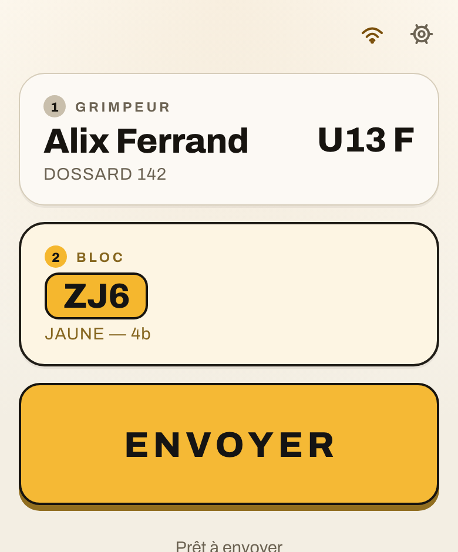
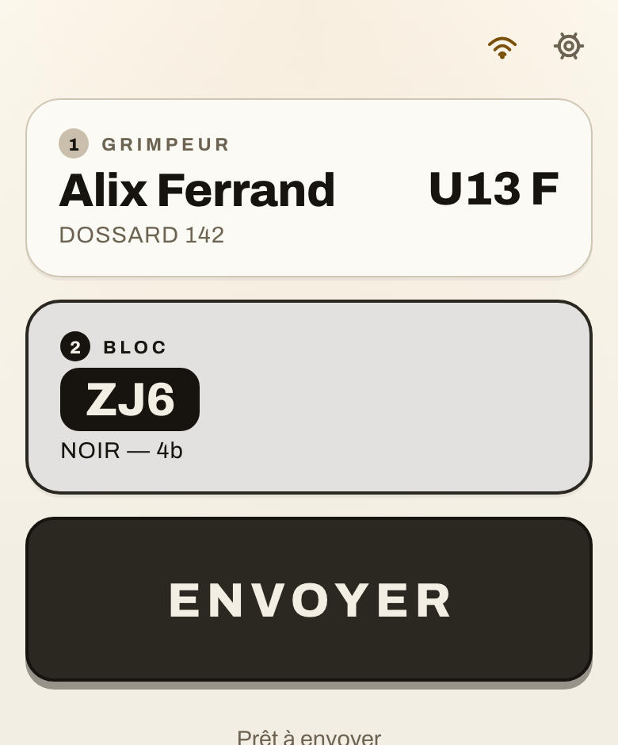
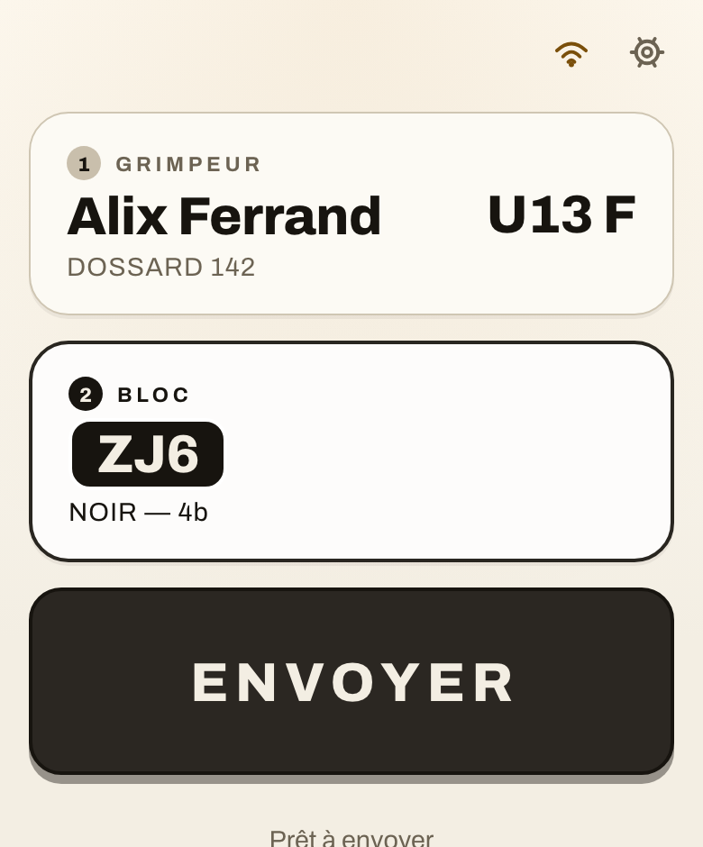
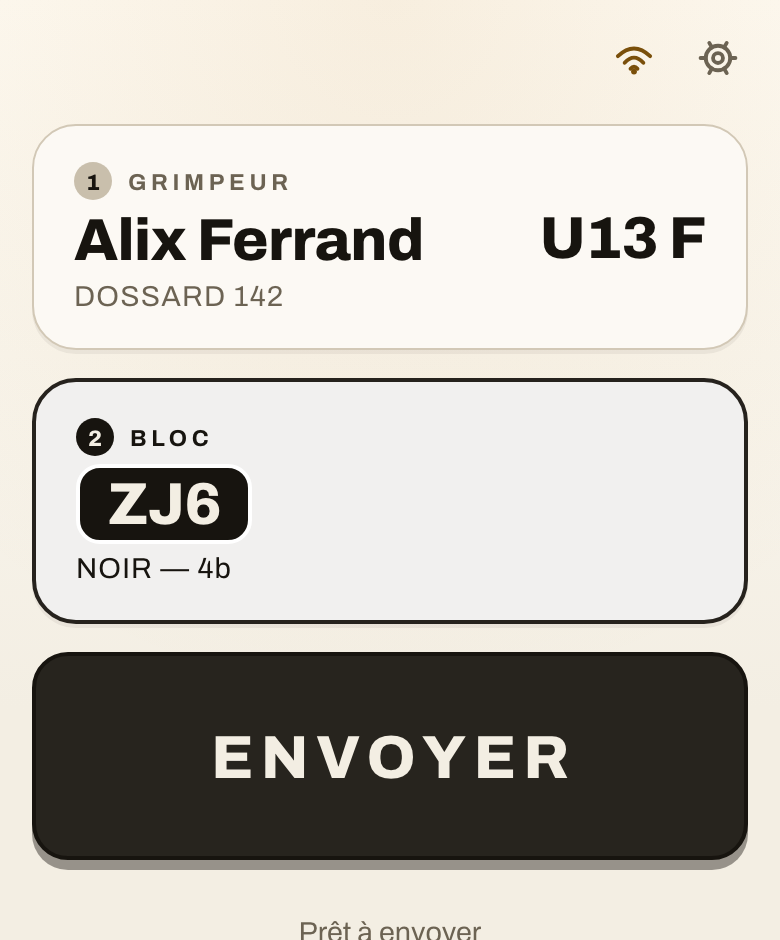

041 — Deux réglages à trancher
Deux réglages à trancher
Tu as validé la matière imprimée, avec deux réserves :
l’ombre du bouton trop franche, et le circuit « Noir » à revoir sur un aperçu
dédié. Les voici, sur le vrai écran.
1. L’ombre du bouton « Envoyer »
La première vignette est celle que tu as jugée trop franche.
Elle reste là comme témoin : sans elle, « plus doux » ne se compare à rien.
S0 — celle que tu as vueEncre pleine, arête nette.
0 5px 0 var(--encre)
S1 — la même, diluéeMême décalage, même arête, mais
l’encre à 42 % : l’étiquette reste posée, l’ombre cesse de peser.
0 5px 0 encre 42 %
S2 — flouePlus d’arête du tout : une ombre portée
classique. Le bouton flotte au lieu d’être imprimé.
0 6px 16px -4px encre 45 %
S3 — courte, puis floueUne arête de 3 px très pâle,
posée sur un halo. La plus discrète des trois douces.
0 3px 0 encre 26 % + 0 9px 20px -8px encre 50 %

S4 — l’ombre prend le circuitPlus de noir du tout :
l’ombre est un jaune assombri. Elle change de teinte avec le bloc.
0 5px 0 circuit 55 % + encre
2. Le circuit « Noir »
C’est le seul circuit dont l’encre est la couleur : le
liseré se confond avec l’aplat, et la carte teintée à 13 % de noir vire au gris.

N1 — tel quelLa carte prend 13 % de noir, comme tous
les autres circuits. Aucune règle particulière à écrire — mais la carte
est grise là où les autres sont teintées de leur couleur.

N2 — la carte reste papierSur le seul Noir, la carte
cesse d’être teintée et le liseré de la pastille passe au papier. Plus
de gris ; l’aplat noir porte seul la couleur du circuit.

N3 — teinte de moitié6 % au lieu de 13 % : la carte
garde un souffle de gris, assez pour dire « ce n’est pas une carte
neutre », pas assez pour la faire passer pour éteinte.
Un quatrième cas, écarté d’office : mettre un liseré d’encre
sur un aplat noir. Je l’ai capturé, il est indiscernable de N2 — un
contour noir autour d’un aplat noir ne se voit pas plus qu’un contour blanc.
C’est pour ça qu’il n’est pas dans la planche.